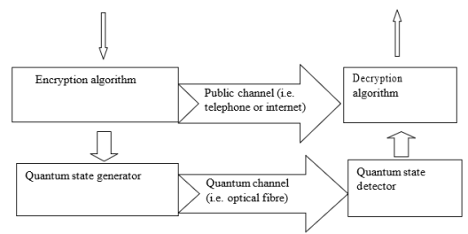

Since the invention of the internet, there has been an exponential growth in the communication of data across the globe. To
protect this data, cyber security is the topic for providing secure channels on the internet by using modern cryptography to
encrypt and decrypt data between two parties. But the future of quantum algorithms will render these useless once reliable
quantum computers are made. Quantum cryptography in todays cybersecurity can be used to prevent cyber attacks with quantum-resistant
encryption techniques and quantum key distribution to secure channels between parties. IBM are at the head of this, recently
introducing their 'Quantum System Two' already far surpassing classical brute-force methods of classical supercomputers using over
100 qubits to do this (IBM Quantum System Two, no date).
Cryptography is the process of manipulating a raw message into ciphertext from the sender with the goal of making it unrecognisable to
an unwanted party that may intercept it, ensuring the security of the hidden message is kept between the two communicating
parties (Tech Target, 2024). The receiver will use a key to decrypt the ciphertext to unlock the original message. Modern cryptography uses
this everyday in our lives whether it may be authenticating your identity with a password or downloading something of the internet, to put
simply, it is "the study of mathematical techniques for securing digital information,systems, and distributed computations against adversarial
attacks."(Katz, J., Lindell, Y, 2014). In this hyper-information age, we secure this information electronically by either
manipulating the binary or hex in an irreversible way like a hash or generating large prime numbers that modern computers find hard factoring and
more that will be covered in the next section. Soon this will change, quantum physics is not a new field in science but has been progressing with
small breakthroughs over the years.
Cryptography uses procedures known as an algorithm for communication in a message space defined as: generate a key, encrypt, decrypt; verification for
message authentication and key exchange (Tech Target, 2024). Today's cryptography splits into two categories: Symmetric systems, using the
same key to encrypt and decrypt data like Data Encryption Standard (DES) and Advanced Encryption Standard (AES) which encode blocks of information at a
time using a private key that all parties trying to communicate must know (Lopez. S, 2018). Asymmetric encryption makes transmission
of data more secure by using a public and private key, one party will generate both keys that relate to each other, the public key is used by anyone but
the private key is the only key that can decrypt messages. Algorithms include RSA and the Diffie-Helman key exchange. Hash
functions are a different tool "not to encode information, rather it serves as a one-way function to verify the integrity of a message" (Lopez, S, 2018),
used to store passwords readable for computers but not attackers.
Quantum computers are fundamentally the same as classical computers in the way that they both share the use of bits that represent a 1 or 0 (on/off),
quantum computers using qubits. These are particles in superposition with each other therefore represent both 0 and 1 at the same time which would make quantum
computers much faster (Dubey, P.,Yadav, O., 2020), having two states at once can perform single operation where it would take two for
classical bits. Although the superposition state collapses after being measured (Hughes, C., Isaacson, J., 2021) due to the observer effect. Shor's algorithm,
used qubits to factorise very large integers up to 1024-bits in 10243 operations (utimaco.com, 2020) in polynomial time using a Quantum
Fourier transforms. Grover's algorithm is a tool for searching an unsorted/unstructured database by applying a series of quantum operations to the input state,
which is initialized as a superposition of all possible search states. The key idea behind Grover's algorithm is to amplify the amplitude of the marked state
(GeeksforGeeks, 2023) while able to search in O(n^1/2) time (Rogers, D., 2022).
Quantum computing although still in the early stages of development, the impact on classical algorithms will be significant. With its potential to solve certain
problems exponentially faster than classical computers with the help of parallelism (Hughes, C., Isaacson, J., 2021), it rises the implications on
cybersecurity. This is problematic because "A quantum computer will allow the attacker to read information that has been encrypted in the past, and forge
information in the future" (www.ncsc.gov.uk, 2020), although new information secured against quantum computers is found; it would not account for
all the current private information on the internet which is a security risk. For specific examples like Shor's algorithm, it can efficiently factor large integers which
will render public-key cryptosystems like RSA vulnerable. Grover's algorithm gives up to a quadratic speedup to current search algorithms like linear and binary search in an
unstructured database, impacting brute-force attacks on cryptographic systems.
To break the encryption it must be intercepted first, but what if even the transportation itself was impossible to eavesdrop. Quantum Key Distribution (QKD) is
the method of building a secure key between two parties by use of photon emission through a quantum channel(e.g. optical fibre), the polarisation of the sender's side orientates
the photon to a specific orientation to represent a qubit with data. The receiver uses two beam splitters to read the positions of the photons and these are
compared to the decoded positions by both parties to create the key (IBM, 2023). Heisenberg uncertainty principle states that it is not possible to measure the
quantum state of any system without disturbing that system, this way a secure key distribution becomes possible to transmit over a quantum channel
and not the encrypted message (Dubey and Yadav, 2021), securing the transmission of information. See Figure 1 for flow chart of QKD.

Quantum Key Distribution flow chart (Dubey, P. and Yadav, O., 2021)
This paper analysed the potential impact of quantum algorithms to current modern cryptographic systems and how these can be mitigated. Right now, companies such as, IBM, Google,
NIST, Microsoft and many more are all researching quantum-resistant techniques like QKD to provide a secure channel for communication over the internet.
Ultimately, when quantum computers can overcome their flaws, they will be making breakthroughs in cybersecurity making it near impossible to break, not only that but its ability for machine learning to develop more sophisticated methods of threat detection etc. However, the same can be said for used
for being used for attacking and accelerating brute-force attacks. Although QKD requires specialist hardware, and does not provide a way of doing digital signatures
(www.ncsc.gov.uk, 2020). But this technology is inevitable so it can only be hoped that companies will find the best use and safeguard to this technology.
Katz, J, & Lindell, Y (2014), Introduction to Modern Cryptography, CRC Press LLC, Bosa Roca. Available at: to website (Accessed: 22 October 2024)
Hughes, C., Isaacson, J., Perry, A., Sun, Ranbel F. and Turner, J (2021), Quantum Computing for the Quantum Curious. Available at: to website (Accessed: 22 October 2024)
www.ncsc.gov.uk (2020), Preparing for Quantum-Safe Cryptography. Available at: to website. (Accessed: 23 October 2024)
Rogers, D. (2022), Broadband Quantum Cryptography. Springer Nature. Available at:to website (Accessed: 23 October 2024)
TechTarget (2024), What is cryptography? Available at: to website (Accessed: 29 October 2024)
Dubey, P. and Yadav, O. (2021), A Survey on Quantum cryptography versus classical Cryptography. International Journal of Current Engineering and Technology, 10(06), pp.910–913. Available at: to website (Accessed: 30 October 2024)
IBM (no date), IBM Quantum System Two is the modular quantum computing architecture for utility-scale work. Available at: to website (Accessed: 30 October 2024)
Lopez. S, (2018), "MODERN CRYPTOGRAPHY". Electronic Theses, Projects, and Dissertations. 729. Available at: to website (Accessed: 31 October 2024)
IBM (2023), What is quantum cryptography? Available at: to website (Accessed: 1 November)
utimaco.com (2020), What is Shor’s Algorithm? - Utimaco. Available at: to website (Accessed: 1 December 2024)
GeeksforGeeks. (2023), Introduction to Grover’s Algorithm. Available at: to website (Accessed: 1 December 2024)
Conference Presentation: Investigating the potential impact of quantum computing on existing cryptographic algorithms and developing quantum-resistant encryption techniques.